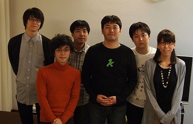

Rubyist Hotlinks 【第 26 回】 cuzic さん
はじめに
著名な Rubyist にインタビューを行う企画「Rubyist Hotlinks」。今回は関西編第 3 弾をお送りします。関西編 (3) は、Rubyist Magazine から書籍化された「Rubyist Magazine 出張版 Ruby on Windows」の著者である cuzic さんにお話を伺いました。お楽しみください。
プロフィール
 関西を中心に勉強会や読書会を主催されるなど、精力的に活動されている cuzic さん。最近は Kindle を購入し、Ruby で Web Scraping した記事を読んでいらっしゃいます。趣味は芸能ニュース。
関西を中心に勉強会や読書会を主催されるなど、精力的に活動されている cuzic さん。最近は Kindle を購入し、Ruby で Web Scraping した記事を読んでいらっしゃいます。趣味は芸能ニュース。
- 好きな言葉
- ここはカンザスじゃない
- 尊敬する人
- Ruby 会議で発表する人たち
- ご本人のサイト
- http://www.cuzic.com/
インタビュー
: 
- 聞き手
- okkez さん
- 語り手
- cuzic さん
- 野次馬
- Yuya さん、西山さん、Sixeight さん、morphine57 さん
- 日にち
- 2010 年 11 月 10 日
- 場所
- 大阪市内の某所
（右の写真について。左から、Sixeight さん、Yuya さん、西山さん、cuzic さん、okkez さん、morphine57 さん。）
目次
プロフィール
okkez では、はじめます。
全員 いぇー。
okkez 場所は大阪市内の某所です。なぞの秘密基地に集まりました。
生年月日、出身地、現住所、家族構成
okkez では簡単にざざーっと行きましょう。プロフィール。生年月日、出身地、現住所、家族構成。
cuzic 生年月日は、昭和の生まれです、くらいで。
全員 (笑)
okkez なんなら代わりに言おうか？
cuzic え、知ってんの？昭和 54 年くらいで。
okkez で、6 月やったっけ？
cuzic 4 月。ま、それくらいで。
okkez で、出身地は？
cuzic 出身地は大阪。現住所も大阪。家族構成は奥さんが 1 人。子供もいないし、親もいないみたいな。別居ですね (笑)
全員 (笑)
okkez 親もわりとすぐ近くに住んでるんじゃなかったっけ？
cuzic まあ、大阪市内に住んでるけど。
okkez そうだよね。
西山 実家の家族構成は？
cuzic 実家の家族構成は、父、母、兄、兄、俺かな。
Yuya 末っ子なんですね。男 3 人兄弟？
cuzic そうそう。で、祖父、祖母とかは家にいなかったタイプですね。ま、普通です。
西山 何をされてるんですか？
cuzic えー、まあ普通の建築系のお仕事かな。
okkez cuzic 組とかみたいなんがあるの？
cuzic まあ、そんなでかいもんじゃなかったけど。
Sixeight お兄さんは家の仕事をされてる？
cuzic 兄はね、わりと IT 業界で生きてるけどね。まあ、その流れと言えばその流れなんかな。
Yuya その兄たちと IT 話はしたりします？
cuzic あんま無いなぁ。
好きな言葉、座右の銘
okkez 次、好きな言葉座右の銘。なんかあれば。
cuzic うーん、何にしようかな？「ここはカンザスじゃない」ぐらいにしようかな。ちょっとマイナー。分からない人多いかも。
okkez 分からん。
Yuya 分かんなかったです。
cuzic オズの魔法使いと言う映画があって。まあ、ミュージカルでもあるんだけど。ドロシーっていう女の子が竜巻で飛ばされた後、魔女を下敷きにして、竜巻に飛ばされた家が落ちてくるんやけど。で、落ちてきた後、ドロシーが魔法がおきてることに気がついて、「あ、ここはカンザスじゃないんだわ」みたいな台詞があって。で、慣用句的に今まで慣れ親しんだ世界とは違うんやみたいな意味でよく使われると言う。
okkez よく使われるんや。
Yuya それは何？英語圏で？
cuzic 英語圏で。オズの魔法使いはみんな知ってること前提。別に「ここはカンザスじゃない」って、なんか「ビバリーヒルズ青春白書」のドラマタイトルかなんかで使われてたよ 1。
okkez ほんまや、使われてる。アメリカンカルチャーやねんな。
morphine57 ほんまや。
cuzic アメリカンカルチャーやねん。
okkez でも君、日本人だよね。
cuzic 日本人だよ。まあ、なんやろね。要は、色々変化していくんやけど、変化することに気づきましょうみたいな感じですかね？
尊敬する人
okkez じゃあ、尊敬する人。
cuzic okkez さんとか Yuya さんとかかな。
okkez ここにいる人だけ言わんといてください。
Yuya (笑)
cuzic 尊敬する人っていっぱいいるよね。歴史上の人物もいっぱいいれば、実際に生きてる人もいっぱいいるし。
okkez いいっすよ、2 時間ずっと言ってもらって。
全員 (笑)
cuzic これは難しいね。
okkez まあ、いっぱいいると。
cuzic いっぱいいるね。Ruby 会議で発表する人はみんなすごいと思うな。尊敬しまくりやな。尊敬尊敬の毎日です。
Sixeight cuzic さんは発表したこと無いんですか？
cuzic Ruby 会議には LT で発表したことあるよ2。逆に LT くらいしか無いな。
okkez じゃあ、次回はぜひ。
cuzic そんな晴れがましい舞台にに出るようなあれじゃないんで。
代表作
okkez じゃあ、次。代表作。
cuzic 代表作。これも難しいね。まあ特に無いんで。
okkez でも『Ruby On Windows』は？

cuzic 『Ruby On Windows』にしときましょか。本を書きましたと言うことで。
okkez だよね。
cuzic あと、るびまに記事 3 書いてましたって言うのを代表作にしといてください。
okkez でもライブラリはちょいちょい書いてるよね？
cuzic でもあんまり公開してないからね。
okkez してないね。
cuzic してない、してない。
okkez してほしいねんけど。
cuzic あれは何でやろね？あれは単に公開するのが面倒でしないことが多いからね。
okkez むしろ俺にソースコードくれたら俺が公開するわ。
cuzic そんなやり方が……。ドキュメントもついてくれたら嬉しいな。
okkez もう zip でまとめて送って。
cuzic おれさ、Yuya さんとかと違ってさ、パソコンのハードディスクのデータのバックアップを全然取らない派だからさ、昔のファイルはどんどん消えてるんだよね。
Yuya (笑)
cuzic だから、買い変えてから作ったものしか残ってないんだよね。基本的には。
okkez これはひどい (笑)
cuzic で、今のパソコンがクラッシュとかしたらすべて失われるだよね。
Sixeight (笑)
cuzic まあ、俺って過去を振り返らない男だからさ。
全員 (笑)
Yuya 潔い。
okkez せめて、なんかさ、Dropbox とか github に上げようよ。
Yuya いや、別に普通に DVD-R とかでいいやん。楽ですよ、楽。
cuzic なんかさ、トルネコの大冒険的な感じでさ、同じことに何回もトライすることに喜びを感じるみたいな。
全員 (笑)
cuzic まったく同じプログラムが、前は 2 時間かかってたのに、今は 10 分くらいで書けたりとかして嬉しい見たいな。
全員 (笑)
Yuya さらに構造が綺麗になってるみたいな。
cuzic そうそう、さらに綺麗になってるみたいな。だけど、そもそも 10 分の努力は cp でよかったんじゃないか、みたいな。
全員 (笑)
cuzic なんかそんなこと言ってはいけないみたいな。そんな感じの毎日ですわ。
okkez 1 回バックアップ取っとけばすむことだよね。
cuzic そうなんだよ。でも検索するコストもあるからね、実は。
Yuya いや、でも作り直すコストよりは低いと思いますよ。
okkez 検索は 10 分かからへんと思う、俺も。
Yuya 10 分あったらかなりの世界を巡れますよ。
cuzic やっぱり？まあでもいいかな、みたいな。
okkez ふーん。じゃあ、代表作は毎日消滅していくと。
cuzic (笑)。そうやね、残っていかないね。俺の場合は。
okkez じゃあ、今、手元にある代表作は zip でまとめて送ってください。代わりに公開しますんで。
cuzic じゃあ、要相談と言うことで。
Yuya (笑)
okkez 要相談なんや。まだ逃げるか。
好きなメソッド、嫌いなメソッド
okkez 好きなメソッドは何ですか？
cuzic 好きなメソッドねぇ。なんやろねぇ。いっぱいあるよねぇ。なんか Ruby は好きなメソッドがいっぱいあるよねぇ。でも最近は class_eval とかよく使うけどね。
Yuya (笑)
okkez 前回に続き eval 系で。
cuzic eval 系で。ちなみに map と collect だったら map 派でございます。これはちょっと主張しとこか。理由はつづりが短いからです。
okkez 嫌いなメソッドはありますか？
cuzic 嫌いなメソッドは無いんちゃうかな、あんまり。なんやろな。全然無いですね、思い浮かばない。
Yuya class_eval じゃないんですか？
cuzic そうやねぇ。あ、p の返り値にイラっときたりとか。
Yuya えっ？その値であってほしい？
cuzic その値であってほしい派かな。どっちかって言うと。
Yuya それは分からないでもない。
okkez 最近は、1.9 では引数が返るようになってるよ。
Yuya じゃあ、好きなクラスとか嫌いなクラスは？ちょっとレベルを上げて。
cuzic 好きなクラスは、Ruby の Numeric 系のクラス体系はちょっと好きかな。ちゃんとそれぞれ + とか - とか C で実装されててすばやくキビキビ動くし、しかも Fixnum から Bignum とかにナチュラルに変わっていくし。あれは結構いいと思うな。
Yuya そうですね。
cuzic あのクラス設計は素晴らしいと思うな。
okkez 数学な人たちは、もうちょっとちゃんと考えたいとか思ってるみたいですけど。
cuzic あ、そうなんですか？
okkez Rational とか、Complex とか、あの辺。
cuzic でもそういう一般化をするとさ、普通の人にとって使いにくいからね。だから平均的なニーズをよく満たしてると思うけどな。今の実装は。
Yuya 最初から有理数とかは……
cuzic そうなんだよ。あんまり有理数とか言うニーズはあまり平均的じゃないと思うけどな。ま、それぞれの考え方があると思うけど。
okkez うん。
cuzic IO クラスとかは、C 言語的というかカーネルコールの write とか read とか、自然に呼べていい感じかなと思ったりするかな。
Yuya オプションですか？
cuzic puts もできるし、sysread、syswrite もできると。
Yuya sysread、syswrite って使ったこと無いんですけど。
okkez 俺も無い。
cuzic ネットワークプログラミングとかをしないと使わないかもしれない。テキスト処理には使わないと思う。
Yuya 何が違うんですか？何をするものなのか分かってない。
西山 えっと、C 言語で言う fread と read の違い。
cuzic えっ？sysread と read の違いを説明されたかったんじゃなくて、read と gets とかの違いを説明されたかったんじゃ無いの？
Yuya いやいや、sysread と read の違い。ファイルディスクリプタを指定する的な？
西山 システムコールの read とか write を直接呼ぶのが sysread や syswrite。
Yuya うーん……。ま、いいや。後で自習します。
Ruby に関して
Rubyist になったきっかけ
okkez じゃあ、Ruby について。まず Rubyist になったきっかけは何でしょう？
cuzic 元々 Perl 使いで、Perl の Win32::OLE とか Perl で scraping とかやってたんですけど、なんか scraping してるとどうしてもスレッドを使いたくなって。でも、Perl のスレッドに、あまりにもハマりまくって。アホかボケかってなって。で、もう Perl を捨てて Ruby っていう新しい言語を使ってみようかなと思ったわけ。あと Perl の Win32::OLE の実装は、なんか性に合わなかったけど、Ruby の Win32OLE は比較的しっくりきたので。その 2 つがきっかけですね。あとテキスト処理なんかも Ruby の方がいい感じに使えたから Ruby を使い始めましたって感じかな？
okkez 何年くらいですかね？
cuzic もう 10 年くらいじゃないですかね、2000 年くらい。1.4 から 1.6 くらいの時代かな。
okkez へぇー。
cuzic 本格的には 1.6 から使い始めた感じかな。1.4 も使ってなかったわけじゃないけど。
okkez すごい。
cuzic Yuya さんは 1.2 から使ってたってことなんで。
Yuya いや、1.4 ですよ。1.2 は使ったこと無い。
okkez そんな感じですかね。Perl が嫌で Ruby を使い始めた。
cuzic まあ、そうやな。Perl のスレッド実装がもうちょっとよかったら Ruby 使ってなかったかもしれへん。
Yuya (笑)
cuzic あれはあまりにもひどかったなあ。どんなけ segfault するねん、みたいな。
okkez 別にオブジェクト指向とかは関係ないと？
cuzic うん、別にオブジェクト指向で Perl 書いてたからねぇ、元々。別に自分で書く分には、Perl のオブジェクト指向はそんなに嫌じゃなかったなぁ。
okkez ふーん。
cuzic 他人のオブジェクト指向の Perl を読むと、うがーみたいな、嫌気が差すことがあるけど、自分で書いてる分には。
okkez Perl の欠点は他人のコードが読めないことやね。
cuzic 読めない (笑)。
現在の Ruby との付き合い
okkez 現在の Ruby との付き合い。
cuzic 現在の Ruby との付き合いは、勉強会とかを主催したりとかするような感じの付き合い方ですかね？あ、意味分からんな、これ (笑)
全員 (笑)
okkez あ、でもいっぱい主催してる。させられてると言うか。
cuzic まあ、事務局として働いてます。
okkez Ruby 関西では最近あまり働いてないけど、他で働いてるよね。
cuzic Ruby 関西遠いんやもん 4。
okkez Ruby 関西は働いてくれる人いっぱいいてるからね。
cuzic そうそう。やっぱね、ゆるふわな勉強会も必要とされてると思うんですよね。時代はゆるふわっていうことで。
Yuya (笑)
okkez でも、あんま Ruby との付き合いになってないような。
cuzic いやーね、なんやろな？
Yuya 仕事では使わないんですか？
cuzic 仕事ではね、最近は AutoIT っていうスクリプト言語があるんだけど、そっちが好きになってるから。なんか Excel とかもいっぱい使えて。もちろん Yuya さんがお作りになった Exerb も素晴らしいと思うんだけど。
Yuya (笑)。別のやつ言ってから言わないでください。
cuzic すごく、ちっちゃくなるんだよね、exe がさ。で、exe の小ささに魅力を感じて (笑)
Yuya 2 テラのディスクが 7000 円で買える時代に、ディスクサイズを仰いますか。
cuzic え、だけどさ、メールに添付しようと思ったら……
Yuya exe を添付したらダメですよ (笑)
全員 (笑)
Yuya スクリプトを添付すりゃいいじゃないですか。
cuzic あ、だけど、Ruby の実行環境を向こうが持ってる前提になっちゃうんじゃん。
Yuya うん。
okkez それ、AutoIT もいっしょやんな？ あ、でも AutoIT は exe に出来るんか。
cuzic うん。それで exe にした時に比較的小さい。
okkez ああー。
cuzic で、Windows API はなんでも呼べるし。まあ、文法は VB ライクで気持ち悪いけど。オブジェクト指向じゃないし。
Yuya でも、まあちょこちょこっとしたスクリプトを書くにはいい？
cuzic まあ、そうやね。20 行から 30 行くらいなら不満を感じないレベルやな。100 行を超え始めると大分イライラし始めるかな。
okkez その言語仕様で 100 行超えるのはちょっとしんどいな。
- cuzic オブジェクト指向がないと 100 行超えるとイライラするな。

Yuya AutoIT はどこで知ったんですか？
cuzic Excel とかの自動化系の文書を読んでるとよく紹介されてて、使ってみようかなと思ったら COM も公開されてたし、Ruby からもいじくれるぜと思っていじってたんだけど、なんか AutoIT もスクリプト言語を持ってるし、まあ、そっちで書いてもいいかなみたいな。
okkez マウスとかも動かせるのもあったと思うんやけど。
cuzic AutoHotKey じゃないですか？
okkez AutoHotKey ですね。AutoHotKey はダメなん？
cuzic AutoHotKey は COM が公開されてないからダメなんです。
okkez なるほど。Ruby から動かせない。
cuzic Ruby から動かせない。だから AutoIT で作ってても、AutoIT の COM を使ってそのスクリプトを Ruby から使うように作り変えることは、すごいコストが低い作業なので。
Yuya へぇー。
cuzic だから、大きくなって来たら、Ruby に移行することも出来る。と言うことで Ruby との付き合いがあまり出てないなぁ。Ruby はね、Kindle 5 っていう新しい電子書籍端末を買ったんだけど……
okkez それは後にしましょう。
cuzic あ、そうやね。まあ、それをRubyでごにょごにょうまいことやってますと言うことで。
Sixeight scraping？
cuzic まあ、そうですね。
Ruby の好きなところ、嫌いなところ
okkez じゃあ、Ruby の好きなところ。何かありますか？
cuzic Thread がいい感じに実装されてるところ。さっきと同じやけど。あと、日本語対応も素晴らしいと思います。それからライブラリが Perl よりずっと整理整頓されてると言うか、大クラス主義で分かりやすいのがいいと思いますね。
okkez ふんふん。
cuzic なんか、Java っていう言語があるんやけど、IO とかが細かく分類されてるのがイライラっとして (笑)。Ruby は IO がすごい分かりやすい。
okkez Stream とか？
cuzic そう、Stream。
Yuya Ruby は IO と File しかない。
cuzic Ruby はすごい分かりやすいと思うな。まあ、人によって考え方が違うかも知れんけど、あんな Bufferd なんたらみたいな長い文字を置くのが嫌だな、みたいな。
okkez どれを使うのが適切なのかが分からない (笑)
cuzic 考えなあかんことが多すぎる。Ruby はなんでも IO で出来るからすごい便利。いいよね、それで。Text も Binary も同じでいいよね。
Yuya スクリプト言語は大クラス主義の方がやっぱり使いやすいですね。
cuzic うん。使いやすいと思うな。
okkez 好きなところは大クラス主義。嫌いなところは何かありますか？
cuzic 嫌いなところは、そんな特にはないんやけどな……。やっぱ動かないサーバとかがあるところかな。レンタルサーバとかで Ruby がもっとバンバン動いてもっと安かったらいいのに、みたいな。でもそれはレンタルサーバの嫌いなところか？
okkez うん、Ruby は悪くない (笑)
Yuya でも最近は動かない所は少なくなってきたと思いますね。
okkez VPS 6 もあるから別に……。Java が動いたら JRuby 動くし。
cuzic Web ホスティング業者で Rails が普通に動いたらええのになぁ。けっこうハックっぽいことをやらないと Rails が動かない気がして。そこはちょっと不満点やなぁ。
okkez なんかインストールが大変。
cuzic そうそう。その辺がなんか楽チンになればいいなぁって思うのに。まあ、Heroku 7 みたいのがもっと安くなればそれだけでいい、みたいなのがあるのかもしれないけどね。
okkez Heroku はある程度無料で動かせるやん。
cuzic まあ、そうやねぇ。それで満足しましょうって言うことかもしれへんねぇ。
okkez autoscale とかし始めたとたん、お金がめっちゃかかり始めるけど。
Rubyを使った成功事例
okkez じゃあ、次、Ruby を使った成功事例。これいっぱいあるんじゃないですか？
cuzic えー、なんにしよう？さっき話し始めた Kindle の話をしようか？
okkez Kindle の前に Excel のオートメーションとか。
cuzic Excel のオートメーションとかはねぇ、かなり頑張ってますよ。
Yuya 無いと生きていけない？
cuzic (笑)。まあ、せやなぁ。なんで Excel でこんな面倒くさい仕事がいっぱいあるんやろね。
Yuya (笑)
cuzic 不思議やねぇ。しかもみんな綺麗な Excel じゃないしねぇ。まあ、それは置いといて。具体的にはなんやろねぇ。このまえ KOF 8 と言うところでしゃべったんですけど、Excel から GUI コンポーネントがちゃんと配置されてるかを調べるとか、SQL を作ってみましょうとか、いろんなテクを紹介した。あんなんは Ruby を使って役に立ってる事例かなと。
okkez 資料は公開したんだっけ？
cuzic 資料は公開してるよ 9。
okkez でも scraping して、手で持つ端末で見るみたいなことは、ずっとやってはりますよね。
cuzic ずっとやってるよ。元々はガラケー 10 でやってて、不満点は特に無かったんだけど、Docomo の端末だと 100KB までしか一度に読み込めないっていう制限があって。100KB だとちょっと長めの記事だと、すぐ超えちゃって不便だったんですよね。そいで、Kindle という端末を買って。Kindle だと何十メガでも一気に読めるからすごい楽チン。全ての記事をつなげて読んでるけど、全然問題なく動いてる。
Sixeight 繋げてって、1 ページに？
cuzic そうそう。1 日分の僕が読みたい記事をすべて scraping して 1 ページにつなげて、それを電子書籍の形式に変えて読んでる。11
okkez 1 ページって、1 つの HTML ファイルにしてるってこと？
cuzic 1 ページの HTML にして、それを Kindle のメールアドレスに送ったら、1 つの電子書籍になるみたいな。
okkez へぇー。HTML を送ったら、勝手に epub に変換してくれるの？それは便利だ。
cuzic それも、Wi-Fi で自動でつながって、自動的にダウンロードされるから、ダウンロード操作もいらない。超便利。
Yuya おおー。
Sixeight 超便利じゃないですか。
okkez え、それはあれ？ 3G で受信するん？
- cuzic あ、それも出来る。3G だとお金がかかるんだけど、3G で受信することも出来る。Wi-Fi だったら無料で出来る。
okkez なんか、メールを送ったら Wi-Fi で自動でダウンロードされるって言うのがよく分からなかったんだけど……。
cuzic 多分、ポーリングしてるんだと思うね、Kindle から。
okkez あー、Wi-Fi が常にここでは飛んでるから？
cuzic そうそう。定期的にポーリングしてて、新しいのがあったら取りに行くと。
okkez へぇー、なるほど。便利だねぇ。
cuzic 便利やと思うな。
Yuya ポーリングをしてると電池の持ちは？
cuzic それは全然落ちて、元々 Wi-Fi も 3G も OFF にしてたら 30 日間は無充電でいけるそうなんだけど、Wi-Fi とかを使うと 1 週間くらいしか持たない。
Yuya でも、1 週間も保つんですね。
morphine57 どこのネットワーク使ってるんですか？
cuzic 日本だと Docomo と Softbank が使える。世界中どこでも使える。超便利。みんな Kindle 買いましょう。
morphine57 (笑)。宣伝が入った。
Yuya (笑)。
cuzic Kindle すごいよ。もうなんかね、日本まで届くの 2 日くらいだしね、意味分かんね。
Yuya アフィリエイトしとくべきではないでしょうか。
西山 で、scraping のソフトも公開すると。
okkez 携帯版のやつは公開してなかったっけ？
cuzic github に公開したやつは動かないんだよね。
全員 (笑)
cuzic だから動くようにしないといけないんだよね、実は。それの作業はしてるんだけど、公開はしてないね。12
okkez いや、こまめに push しましょうよ。
cuzic そういうのは認識してると言うことで。
morphine57 使ってみたいです。
Ruby のキラーアプリケーション
okkez Ruby のキラーアプリケーション。でもさっき Thread とか言ってたよね。アプリケーションじゃねーやん。
cuzic まあ、scraping やってた頃は、Thread がちゃんと動いてくれないと困るような感じで。
Yuya つまり Ruby 自身がキラーアプリだったと。
cuzic まあ、そうだね。Ruby の機能の一部かな。でも Ruby の Thread はよく考えられてると思うな。だって普通の人は IO の多重化をしたいんであって、真の意味で Thread 化したいわけじゃないと思うんだよね。どうなんだろ、1.9 ではそうなったんだけど。
Sixeight ネイティブかそうじゃないかってこと？
cuzic IO の多重化の実装手段として Thread という話が多くて、1.8 の Thread は非常に有効に働いてたなと。どんな環境でも動くし。まあ、今はマルチコア化されたからね。それはちょっと事情が違うと思うけど。
Yuya そうですね。
okkez で、キラーアプリは何ですかね (笑)
cuzic (笑)。キラーアプリね。なんやろな。ま、自分が作ったアプリみたいな感じになっちゃうんですかね。
okkez 人が作ったアプリはあまり使わない？
cuzic 普通に Web の記事をいっぱい読むとか。やりたいことが多くないからかもしれないな。で、自分のやりたいことについて深くやりたいみたいな感じなので、あんまり人が作ったアプリで満たされることが少ないのかもしれない。
okkez ああー。
Yuya でも Ruby のキラーアプリって難しくないですかね？
cuzic まあ、Rails とかの汎用フレームワークになっちゃうもんね。
okkez 昔の人だと、tDiary がキラーアプリだったとか。
cuzic だから、ライブラリがキラーアプリになるんじゃないかな。Win32OLE とか thread とか。
okkez そういう機能になるよね、プログラマとして考えるとそうなるよな。
Yuya ねぇ、アプリで考えると。
cuzic まず、Ruby で書かれたアプリを使ってないからね。たとえば、Joruri すごいなと思うけど、使ってないからね。
okkez 俺、Redmine は使ってる。
Yuya Termtter とかは？
cuzic あ、Termtter はね、パスワードが平文で出来た時代は使ってたよ。
Yuya (笑)。
okkez oauth は w3m でいけたよ。
cuzic あ、そうなの？あれはやりたいなぁと言うか、やるべきなんだけど。
okkez oauth の PIN コードもらうのは w3m でも出来た。
cuzic え？PIN コードさえもらえば、その PIN コードを流用したら Termtter でいけるようになるの？
okkez たしか出来たと思うけど。PIN コードを発行して……
cuzic ちょっと調べないといけないな。使えないまま放置になってるんだけどね。
Yuya 使ってないキラーアプリ (笑)
cuzic 2010 年 6 月の出来事やね。もう何ヶ月経ってるんや。
okkez まあ、出来るからやってみてください。
cuzic はい。Termtter は素晴らしく便利だと思いますね。
okkez では、キラーアプリケーションは特に無し？
cuzic はい。で、ライブラリとかが優れてると思います。Exerb は特に優れてると思います。
okkez じゃあ、キラーアプリは Exerb じゃない？。
cuzic ほんまやな、じゃあ Exerb やな。
Yuya そうなんですか (笑)。アプリだけど、キラーアプリになりえないアプリですよ。
cuzic (笑)。ライブラリと一緒やで、立ち位置は (笑)。
Yuya コンパイラとかと同じ立ち位置じゃないですか。
cuzic そうそうそう。
Yuya キラーアプリって難しいよな、今となっては。
okkez うん、そうなんだよね。この質問は今後なくなるかも知れへんな。
全員 (笑)
Ruby の習得
okkez じゃあ、次。Ruby の習得は簡単でしたか？
cuzic 元々、Perl でオブジェクト指向やってたからね。そんなに難しいとは思わへんかったなぁ。
Yuya さすが cuzic 先生。
okkez さすが。cuzic 大先生。
cuzic なんで…… (笑)。ブロックもちょっと奇妙やなと思ったけど。だけど元々ブロック的なものがほしいなと、ブロックに触れる前から思ってたから、むしろ自然に感じたなぁ。
okkez なるほど。
cuzic Ruby がいい言語やと思ったのは、学んでて楽しかったもんなぁ。なんか特異メソッドが作れるとか。だから僕の Rubyist Magazine に書いてた記事は特異メソッドがやたら使われていたと言う。
Yuya (笑)
cuzic 僕、その頃はオブジェクト指向よりもプロトタイプ指向の方がいいんじゃないかと思ってた時期で、だから Rubyist Magazine の記事はそういう方向で書いた。あれを読んだアユちゃんとかは、一時期、特異メソッドがすごい大好きっ子になってたらしいという話を聞いた。
Yuya そんな悪の道に。
cuzic そんな悪の道じゃないと思うけどなぁ。いい使い方やと思うけどな。Module を Extend してメソッドをいっぱい増やせるみたいな。
okkez 適切な場面で適切な使い方をしたいよな。
Yuya いい道具ですよね。
cuzic うん。クラスが必ずしもいい道具じゃないからね。特に継承とかは依存関係が強くなる。
プログラミング全般
初めてのプログラミング
okkez 次。プログラミング全般について。初めてのプログラミングは？
cuzic なんやろねぇ、昔からやってたけど、たとえば Basic でオセロゲームを作ったみたいな。だけどそういうのは基本的には大学に入ってからじゃないかな？
okkez 中学校の時とか小学校の時は全然やってない？
cuzic やってたけど、あんまり中身を理解してなかったと言うか。大学に入ってから中身を理解して書くようになったっていう感じかな。
okkez じゃあ、結構遅い？
cuzic Yuya 大先生みたいな、生まれた時から Hello, world を書いてるとかは全然。
全員 (笑)
okkez 大学に入って初めて作った物はなんですか？
cuzic もちろん、最初は Hello, world を作って。当たり前やね。
okkez それは何の言語で？
cuzic C 言語。カーニハン & リッチーだよね。それにしたがってカレンダーを作ったりとか、そういう演習問題的な内容をやったりとか。あれは本当に好きになれへんかったなぁ。僕には K&R は肌には合わへんかったみたいやな。林晴比古の「新Ｃ言語入門」やったっけ？あれで勉強してた気がするわ。

okkez ああー、あれか。あの人の本、嫌いなんだよなぁ。
cuzic あれ、そうか。分かれてしまった。
Yuya 今でも C 言語書けます？
cuzic 今でも書けるんじゃないかなぁ。だけどほとんど関数を調べないといけないんじゃないかな。昔みたいにプロトタイプ宣言は標準やったら全部覚えてる見たいな事は無いと思うな。
Yuya それ覚えてたんですか？
cuzic string.h とかはちょっと調べんと無理やわ。
Yuya C++ も大学の時ですか？
cuzic そうやね。C++ はあの頃は結構好きやったね。C++ は非常マニアックな要素が強いので、あれはなかなか心沸き踊る感じがするね。
Yuya 大学の頃から、相変わらずのマニアックだったと 笑)
cuzic なんかね、奇妙な言語仕様には心踊る物があるよね。
Yuya さすが。
cuzic 男のロマンだよね。
全員 (笑)
okkez じゃあ、Ruby 以外のプログラミング言語は C と C++ と？
cuzic そうやね、あとは Perl と PHP をやってて。まあ、PHP はずっとやってるけど。あと Java もやったね、当然。Java もあんまり好きになれへんかった。昔、携帯アプリをやってた時期があって。あの頃は携帯アプリは Java でしか作れなかったから、Java を勉強して作ってたみたいな感じですかね？
Yuya JavaScript は？
cuzic JavaScript は、昔に Outlook Express っていう名前のメーラーがあった頃に。
全員 (笑)
Yuya 今でもありますよ (笑)
cuzic 今はもう無い。今は Windows Live Mail っていう名前に変わってる。
okkez へぇー。
cuzic ま、今でも使ってる人はいると思うけど。で、あの頃は何でもありの時代で、自分で HTML と JavaScript を書いて、メールを送ったら、そのまま JavaScript が実行されてた時代で。
Yuya (笑)
cuzic いろんな作品を作って、友達に勝手に送りつけて感想を求めると言う謎めいた活動をしてたりしてました。
全員 (笑)
cuzic メールで送って動くって言うのが嬉しかったんよね。普通、びっくりするよね。なんか突然音楽が流れ始めたりとか、桜ひらひらみたいなんも作ったし。
Yuya そんなコードも残ってないと。
cuzic 残ってないに決まってるじゃない。
Yuya あ、でもメールだと相手側に。
cuzic 相手側は、持ってるかもしれへんね。俺は昔のメールは一切残ってないからね。
Yuya ほんとに振り返らない男ですね。
cuzic え、みんな残ってるの？そんなの。
Yuya 小学生の頃のが残ってますね。
cuzic え、絶対信じられへん。
Yuya でも今はさすがに読み出せるかは分かんない。PD 13 に入ってる。
西山 ええー！すごい。
Yuya メディアコンバータ屋さんにお願いしないといけない。
cuzic 自分ストーカーやな。
全員 (笑)。
cuzic でも、俺は全然残す気ないし、これからも残そうとしてないからね。
Yuya でも残そうとしてなくても、案外 Google 様がずーっと残しててくれてるかもしれない。
cuzic あ、それはあると思うけどね。
cuzic web とかに残ってる部分はあえて消そうとは思ってないけどね。でもあえて残そうともしてない感じや。
okkez そこは今後は残そうよ。
cuzic (笑)。自分の作ったものやもんなぁ。
Yuya せっかく作ったんですし。
cuzic まあ、そうかもしれんな。
Yuya 触れる場所にあると誰かが喜ぶかもしれない。
美しいソースコード
okkez 次は、美しいソースコード。なんか今まで読んで美しいと思ったコードはありますか？
cuzic いっぱいあるけどねぇ、そんなん。だけどね、初期に僕が Ruby を一番最初に勉強した頃にね、高林哲さん 14 っていう方が作った quickml とか、この前、KOF で発表 15 してた江渡浩一郎さん 16 の qwikWeb とかをよく読んだ覚えがありますね。それは結構、両方とも綺麗やったなぁ。
okkez へぇー。
cuzic なんか Ruby で書かれてる方が綺麗なものが多いと思うな。
Yuya Ruby 以外の言語で綺麗と感じたものは？
cuzic Ruby 以外の言語はそんなに読んでないからかもしれんけど、まあ、どうしても読まなあかんかった C 言語のコードとかで、「おお、これは綺麗だぜ」と思った経験はあまり無いなぁ。なんか頑張ってるなぁって思ったことはもちろんあるけど。
興味を持っているテーマ
- okkez 今、興味を持っているテーマ。
cuzic さっき言った Kindle 系が、まだまだやらなあかんことが残っていてて。具体的には今は RSS をベースにしてるけど、RSS じゃないような部分を対応させなあかんなと思ってて。例えば、元々ガラケーで作ってた頃は Twitter を読めたりとかしたんやけど、Kindle 版はまだ対応してないから。
Yuya なんか Kindle で Twitter 読んでるって不思議な感じですね。しかも遅れて (笑)
cuzic ま、1 日遅れで Twitter を全部見ると。
okkez まあ、発言してないからねぇ。
cuzic あと、mixi も昔、作った 2 世代前のアプリでは……。まあ、それはもう失われてしまったんだけど。
全員 (笑)
cuzic それは mixi を巡回する機能があって、その巡回する機能を復活させたいなぁと思ってて。
Yuya まあ、確かに変わってるからそのまま使えるわけないですよね。
cuzic web scraping なんて、トルネコの大冒険を 100 回くらい解いた俺なら、昔 1 時間だけど、今は 10 分だぜみたいな、そういう感じやから (笑)
Yuya Nokogiri とかすごい使いやすいですよね。
cuzic すごい使いやすい。昔、net/http を使ってた俺は馬鹿だったんじゃないか見たいな。そんな感じやな。Nokogiri すごいよ。
Yuya さっきの open-uri と Nokogiri？
cuzic そう、ほんとにそう。
Yuya ま、POST があったら別だけど。あ、今は POST もできるのか？出来るんでしたっけ？
okkez open-uri？出来ると言ううわさは聞いたことがあるけど。
cuzic POST を出来るようにするパッチがあるよ 17。
okkez でも、POST まであるんやったら Mechanize を使うな。
Yuya そうですね、そこまで言ったら Mechanize ですね。生 Nokogiri じゃつらい。
cuzic そうなったら、最近は wget を使うんだよな。バッククオートして、wget。
Yuya (笑)
cuzic 一番楽チン。しかもいろんなことに対していい感じに処理して返してくれる。
Yuya とは言え、オプションを調べるのが大変じゃないですか。
cuzic でも 動いたんだよね。
西山 動いたんですか。
okkez man 読めばいいし。
cuzic いや、下手したらさ、Mechanize とかはソース読まないと使い方が分からない部分があったりしてさ、それだったら wget で man 読んだ方が早いんよね。でも wget で cookie をヘッダーに追加してやれば、かなりのことが出来て、それで突破できない web サイトはそんなに多くないから。ま、それでいいかなっていうかんじで。
okkez でもあれだよね、JavaScript をグリグリやってるようなところは、ちょっと無理？
cuzic ちょっと無理やけど、それ Mechanize でもなかなか難しい。
okkez Mechanize でも無理。もうだからそこは対象外。フィード入ってれば、それ読めばいいけど。
cuzic *wget は web scraping に向いてると思うな。
Yuya 今興味を持ってるテーマは scraping 全般？必要としてるものか、興味を持ってるというよりは。
cuzic そうやね、すでに失われてしまったテクノロジを復活させるために (笑)
全員 (笑)
okkez 復活させるんだ。
cuzic 古代ローマの遺産を……って、違うけど。
okkez 古代 cuzic 遺産を。
okkez もうこれしゃべりながら作ってもいいよ。終わった頃に出来たって。
Yuya 読者プレゼントにしましょうか。
okkez じゃあ、今お使いの Kindle を読者プレゼントに。
全員 (笑)
生い立ち
生い立ちについて
okkez 次、生い立ち。
cuzic 生い立ちって何を言えばいいんやろうな。中学時代とかの話をすればいいってこと？
okkez うんうん。
cuzic 大して何もしてなかったな。普通の中学時代やったんじゃないかな。
okkez 普通なの？
morphine57 ほんとに？
cuzic うん、成績はほんと、すごい悪かったしね。
okkez 意外。
Yuya 部活とかは？
cuzic 部活も特にやってないよね。平日はドラマを見なあかんやんか。
- 全員 (笑)

cuzic ドラマって 4 時台から始まるやんか。
Yuya どんな主婦ですか (笑)
cuzic 忙しいからさ。
okkez それほんま、終わって 3 時 15 分くらいにダッシュしないとあかんやん。
cuzic (笑)。だから、忙しいねんて、ほんと。だから部活してる人はさ、どうやって昼のドラマの再放送を見てるんやろね？
okkez いや、見ないって。
全員 (笑)
cuzic うそやん、見ないの？
okkez 見ない見ない。俺、中学校の時はそんなん見てなかった。
cuzic 見てなかったの？
okkez 小学校の頃は見てる日もあったけど。中学は見てなかった。
cuzic 僕はまあ、そういうドラマを見てない okkez さんとは違って、ちゃんとドラマを見てる普通の中学生でした。
全員 (笑)
cuzic そんな感じかな。高校もそんな感じかな。
okkez 部活には所属せず帰宅部？
cuzic 所属してないよ。帰宅部っていうかドラマ部。
Yuya それなら学校にちゃんと公認で。予算もちゃんとついたかもしれないですよ。
okkez じゃあ、ちゃんと 5 人以上集めないと。
cuzic うん。でも活動費はいらない。
okkez 最初は同好会からやね。
Yuya テレビ同好会？ドラマ同好会？
西山 テレビ同好会だとチャンネル権争いが……
全員 (笑)
okkez 今やったらワンセグがあるから。
cuzic まあ、高校もそんな感じで。で、高校くらいからさ、「俺、このままやったら普通のチンピラになるしかないなぁ」と思って。
全員 (笑)
cuzic 生きていかれへんなぁ、みたいな。
okkez この辺、多分ウソが入ってる。
cuzic いや、崖っぷち人生ですよ、ほんまに。何のとりえも無い俺がどうなったらいいかなぁ、見たいな感じで。まあ、とりあえず、焦って勉強してたみたいな。
okkez へぇー。いつから勉強を真剣にやったんですか？
cuzic いやだけど、高一くらいからかなぁ。なんか俺、このままじゃ、アウトローの道に行くしかないなぁ見たいな感じやったから、さすがに一念発起して、真面目になったみたいな。
okkez ちなみに真面目になる前の成績はどれくらいですか？
cuzic そんなん、ほとんど最下位付近じゃないですか。
Yuya ええー？
okkez でもたしか、賢い学校行ってた気がすんねんけどな。
Yuya (笑)。つまりそこで最下位でも、ほとんどの高校では上位と。
okkez なんかそんな感じがすんねんけど、気のせいかな。
cuzic 気のせい、気のせい。まあ、そういうヤサぐれてた時代があったからこそ、俺は勉強しないとまずいと思って勉強して大学入ったんよ。大学入ったってすごいな。しかも四年制大学やもんな。
Yuya (笑)。超高学歴 (笑)
okkez 超高学歴。大学は？
cuzic 大学はね、普通にバイトしながらプログラマとして働いてましたよ。
okkez バイトはどこでしてたんですか？
cuzic 最初時代はね、選挙の応援とかやってて、選挙の名簿作りとかやってましたよ。
okkez へぇー。
cuzic 当時は郵便番号が 7 ケタ化したばかりやって、7 ケタ化した情報を使って、入力を簡単にしたりとか、選挙のドサ廻りのルートを作ったりとかしてましたよ。
okkez はいはいはい。俺が郵便局でバイトしてた頃にそんなことを。
cuzic あ、そう。
okkez 俺は配達の最適化をしてたけど。
Yuya 2 人とも最適化問題を。
okkez いや、俺は俺の最適化だけ。そんな他人の最適化はできん。
cuzic あとはなんやったっけ？あとさっき言った携帯アプリも大学の時代に作った。
okkez 大学の時はそんな感じで、大学院は？
cuzic 大学院もそんな感じ。ざっくりと言えば。で、大学時代は暇やったから、ひたすらプログラミング言語の仕様とか読んでた気がするなぁ。
Yuya へぇー。
cuzic ARM とか。The Anorted Reference Manual？C++ の本。日本語のタイトルが思い出せないんだよね。なんだろ？

西山 「注解 C++ リファレンスマニュアル」？
cuzic あ、それそれ。これはいい本だったと思うよ。めっちゃ読んでたなぁ。
okkez 2001 年やで。そんなもんか？
cuzic そんなもん、そんなもん。暇やった時代やね。あとは、ビャーネ・ストロヴストルップの『C++ の設計と進化』とかも読んだなぁ。でも最近は、コンピュータの本はあまり読んでないかもしれへんな。だって、コンピュータのほんまにマニアックな内容って、ブログで読まないと無理じゃないですか。あと、リファレンスマニュアルとかをちゃんと読むとか。もしくはソースコードを読むとか。
okkez そうやな、最近本で読むって言ったら、網羅的な知識を体系的に得たい時やからなぁ。
cuzic そういうシーンが最近あまり多くないんかもしれへんなぁ。
okkez Ruby に出会ったのも大学時代だよね？
cuzic そうそう。ま、色々やってたからね。Ruby もやってたし、C++ もやってたし、Java もやってた。同じ時期に。
okkez Python には行かなかった？

cuzic Python はね、zope 調べてたけどね。Python ってあんまり萌えーっとせんかってんな。Python って萌え要素少ないと思うな。萌え要素で判断するのもなんやけど (笑)
Yuya むしろ他の言語で萌え要素のある言語ってなんだったんだろう。
okkez なんで萌えになるの？
cuzic なんやろ、C++ のテンプレートってなんか萌えーっとするやん。
okkez その萌えーってするっていうのは、エンドルフィンがでるとかそういう意味？
cuzic そうそう、そういうこと。ドーパミン、ドピュッドピュッ、みたいな。
Yuya 今のなんか、いいんですか？
okkez そろそろインタビューやめていいですか。
全員 (笑)
cuzic なんか、Ruby もね、面白かったと思うけどな。さっき言うてたけど、特異メソッドとか、Module の考え方とか、なんか奇妙な private な考え方とか。結構面白かったと思うな。
okkez そっか、そんな感じで、高校以前の生い立ちについては詳しくは語られませんでした (笑)
cuzic (笑)。それは言わなくてもいいじゃないですか。ドラマを見てたって言うのも伝わったし (笑)
okkez 当時のドラマってなんやろ？
cuzic 当時はね、一番面白かったよ。これはちょっと力説したい。
okkez 80 年代のドレンディードラマの再放送がバンバンやってた時期か？
cuzic やってた、やってた。しかも俺の中学から、「ラブストーリーは突然に」とかさ「101 回目のプロポーズ」とかさ、「東京ラブストーリー」とかさ、「29 歳のクリスマス」とかさ、めっちゃいっぱいあるわけじゃない、いいドラマがさ。で、リアルタイムのドラマも全盛でさ、月 9 とかのドラマがあったわけじゃない。もうねぇ、忙しくてたまらなかった。
全員 (笑)
cuzic なんか、見るものが多すぎて。しかもあの頃は音楽番組がね、毎週、すべての地上派でやっててさ。それも全部見なあかんやんか。
okkez 全部見なあかんの？
cuzic 見なあかん。
okkez 当時は録画機器はあんまりなかったと。
cuzic まあ、VHS があったけどねぇ。
okkez あ、でも家族共用やから使えへんのか？
cuzic まあ、俺しか使ってなかったけどね。なんか全部録画するのは面倒くさいじゃないですか？テープを入れ替えなあかんもん。
okkez 兄弟とは遊んだりはしなかったんですか？
cuzic 兄弟はドラマ見なかったねぇ。そういえば。
okkez 年離れるんでしたっけ？
cuzic そんなに離れてないけど。なぜか見なかったね。
okkez なんか男兄弟がいたら、弟はお兄ちゃんが行くところに 100% 付いていくっていうのが俺の中にあるんやけど。
Yuya (笑)
cuzic 俺はなかったなぁ、全然。
全員 (笑)
普段の生活スタイル
okkez 普段の生活スタイル。今は普通に会社員してるんですよね？
cuzic 会社員してしてますね。
Yuya 朝は何時に起きますか？
cuzic 朝は、早い日は 6 時で、遅い日は 7 時。6 時に起きた日はジムに行ってから会社に行って。で、まあ定時ダッシュして、7 時前には家についてご飯を食べて、2 時間テレビを見て 10 時には寝る、みたいな。そんな感じが普段の生活ですかね。
Yuya 朝は、どれくらいの時間、ジムで運動するんですか？
cuzic 運動時間は 20 分くらいかな。服着替えたり、風呂入ったりするから 1 時間くらいかかるけど。
Yuya ウェイトですか？
cuzic ウェイトトレーニングですね。
Yuya ほぼ毎日？
cuzic 今は膝が痛かったからあまり行ってないけど、前はほぼ毎日行ってたね。
Yuya いいなぁ。家から会社までってどれくらいですか？
cuzic 30 分くらいじゃないかな。
Sixeight 近い。
cuzic そのために引越したのもあるから。だけど、また話がそれてしまうけど、大阪から遠くてもここまでやったらいいかなと思ったところが芦屋 18 やったんやけど、芦屋までで賃貸料金の推移を考えたら、なんか我が家のある辺りが一番手ごろな料金体系になってたので。
Yuya 体系は一緒だと思いますよ (笑)
cuzic 料金ね遠くなればなるほど安くなる、みたいなそういうグラフを思い描いてたんだけど、全然そんなことなくって、芦屋に近づけば近づくほど高くなっていくという。
全員 (笑)
cuzic 芦屋が頂点で西宮はちょっと下で、尼崎はもっと下でみたいな。
okkez そりゃそうだ。高級住宅地があるんやもん。
Yuya 間は安いけど (笑)
cuzic だからそう考えたら、遠くのところに住むってありえないな見たいな。ここは大阪に近づいてて、さらにリーズナブルなんで、ここに住む以外に考えれれへんよね、みたいな。
okkez 安いのがよければ、三田 19 に住んだらいいんですよ。
cuzic そんなん、遠すぎじゃない (笑)。検索範囲に含まれてない。
okkez じゃ、夜は 10 時に寝るんですか？早いなぁ。
cuzic でも 10 時に寝て、6 時に起きるんですよ。8 時間だから普通じゃないですか。
okkez 早寝早起きでいい感じか。
cuzic 6 時に起きないと 6 時 50 分に家を出れないからね。
Yuya 会社に着くのは？
cuzic 会社は 8 時半位に着くから、1 時間ジムで、30 分移動でそんなもんじゃないかな。
okkez 9 時始業？
cuzic うん。まあ 8 時半くらいに着くようにしてる。
仕事とプライベートの両立
okkez じゃあ、仕事とプライベートの両立。
cuzic うーん。それは、仕事を大量に高速に実現できるための仕組み作りっていうのを普段から頑張ることを……
Yuya ライフハックをしまくっている。
cuzic 別に仕事は定時で終わるようにして、問題なく終わると言う。
Yuya 残業はほとんどしてないですか？
cuzic ほとんどしてないですね。ま、作業とかがあればしてますけど。
Yuya きっぱりといい一日を。
okkez 優秀なサラリーマン現る。
cuzic どうなんやろね？
Yuya じつはスーツ？
cuzic 会社やから常時ですよ。
okkez え、そうなの？
cuzic うん。だからスーツで会社に行って、会社に着いたら作業着に着替える。
Yuya (笑)。へぇー。
okkez 知らんかった。
morphine57 cuzic さんのことがよくわかるので嬉しいですね。いつも隠してる感じがあるから。
全員 (笑)
Yuya なんか秘密が多いから。
cuzic そんなこと無いよ。
okkez cuzic の 108 の秘密って言う本を達人出版会から出したいな。
Yuya Kindle で読めます、みたいな。
okkez cuzic の視力は 0.いくらだぞ、みたいな。
全員 (笑)
cuzic それ嬉しいの (笑)。それを読んでどんな気持ちになるん。嬉しくないやろ。
okkez とにかく、仕事とプライベートはばっちり両立してると。
cuzic うん、まあ、そういう言い方もできるね。
okkez でも、仕事ってさ、そんな頑張ってやるもんじゃないやん。
cuzic 切り上げればいいだけだよね、たいていの場合。で、あと決めればいいことをさっさと決めれば、すぐ終わるよね。
okkez そうそう。
cuzic なんか、決めないまま、検討しといてよ、見たいなんをどんどん増やすと、残業時間が増えると。とにかくさっさと決めることが重要。
okkez あと、プラン B を持っておく。プラン A がダメな時にプラン B をすぐ実行できるようにしておくとか。
Yuya 最初から両方実行したところで、プログラミングの場合はコストがそんなにかかんない。
cuzic ま、よっぽど大変じゃない限り、両方やっちゃえばいいよね、ほんと。なんか、コードが 10 行かかるか、1 行で済むかみたいなのが延々議論されてる気がして。1 万行と 100 行だったら、真面目に議論しないとダメだけどさ、そんなの頑張らなくてもいいよね。どっちかに決めればいいよね。
okkez 1 行と 10 行なら両方書いて動かしたらいいやん。
cuzic そうそう。ダメになったら変えればいいよね。そんなにコストがかからない。
okkez それは昔の人がよく言ってたよ。早すぎる最適化は悪みたいな話 20。
cuzic 検討をばっちりして、100% の時点に最初から到達しようとしなくていいよね、別に。ま、大体いければいいかな、みたいな。
okkez 8 割出来たら、後の 2 割は後でつめていけば。
cuzic うん、出来る。どんどん経験値貯まって行くからね。貯まってない状態で、完璧を目指すからうまくいかないんだと思うな。
Yuya 完璧に理解できてない可能性の方が高いですから。
cuzic そうそう、とりあえず経験値貯めるっていうのが。
Yuya それ、最後の若手への言葉で必要そうな言葉なので。
全員 (笑)
okkez ほんまや。まあ、あとでもう 1 回言ったらいいんちゃうかな。
使っているマシン
okkez じゃあ、使っているマシン。なんかいっぱい持ってるよね？
cuzic いや、そんなことない。今使ってるのこれだけだもん。
okkez え、そうなんや。
cuzic これはパソコン工房で 3 年前に買ったパソコンですね。
okkez デスクトップはもう全然無いの？
cuzic ないない。Dell くんがまだ置かれてるけどね。もう全然使われてない。物置に置いてるね。
okkez 新しいマシンを用意する予定は？無し？
cuzic まあ、買ってもいいかなと思いつつ、別にこれでもいいかなと思ったり。
Yuya 必要性は感じていない？
cuzic まあ、そうやね。Windows7 のために買うかどうかって感じですね。
okkez Let’s note の N シリーズとか S シリーズがいいですか？
cuzic Let’s note はバランス取れてるよね。まあ、いろいろ検討してますってことで。21
好きな女性のタイプ
okkez 次、定番質問。好きな女性のタイプは？
Yuya チャーチャンッ。
cuzic これはどうすればいいんだろう……
Yuya ダダダダダダ。どうぞっ！
cuzic お、奥様と言うことで……、お願いいたします……
Yuya なんでそんなにビビってるんですか。
cuzic (笑)
okkez 今日は奥さんいないですよ。
Yuya 「（棒読み）」とか付けときましょうか？
cuzic 付けなくていいです (笑)。奥さん以外は考えられないに決まってるじゃないですか。
Yuya じゃあ、奥さん以外ではどんなタイプの女性が好きですか？
cuzic また難しい質問を。まあ、好きになった女性がタイプですってことで。
okkez そんな日和った回答が許されると思ってるんですか。
cuzic なんで (笑)
okkez この Hotlinks は人気企画なんですよ。
cuzic (笑)
Yuya かつ、もっとも重要な質問ですよ。
okkez もっと読者のことを考えてください。
cuzic なんでやねん (笑)
Yuya 2 人目の奥さん作るとしたらどんな感じの人ですか？
全員 (笑)
okkez 日本では重婚は認められてませんが、もし仮にと言う話で。
cuzic 今の奥さんともう 1 回……、みたいな。
Yuya 誰がそんな (笑)。じゃあ、芸能人では？
cuzic 俺、ドラマとかいっぱい見てる割に、この人好きっていうのあまり無いんだよね。なんでか分かんないんですけど。
okkez 船越英一郎が好きとかさ、及川光博が好きとかさ。
Yuya 男性 (笑)
cuzic 及川光博は意外と好きだねぇ。ミッチーとかGackt とか、ちゃんと世界観を持ってる人たちはいいと思うな。
Yuya へぇー。
okkez 女性では？
cuzic 戸田恵梨香とかはかわいいなぁと思ってんけどなぁ。デスノートの時とかは。
okkez へぇー。
cuzic 他は誰やろうなぁ。女性で、すげー、これかわいいと思ったことはあまりない。だけど、小西真奈美と福山雅治が結婚したのは大ショックやったな。どっちにショック何やろう？
Yuya そうですよ、どっちにショックだったんですか (笑)
cuzic 福山にショックやったかなぁ、小西真奈美もまあまあショックやったけど。でもあれはガセってうわさらしいから、やっぱねって感じやったけど 22。
Yuya へぇー。
cuzic 嵐のスキャンダルもショックやったなぁ。
okkez 何で (笑)
Yuya まあまあ、芸能ネタ押さえてますね。
okkez だってさ、Kindle でいつも見てるの芸能ニュースやで。
cuzic そうそう、芸能ニュースね、全部読んだらめっちゃ量あるんやんか。こんなに！みたいな。
全員 (笑)
okkez 話がずれましたが、好きな女性のタイプは奥さんと言うことで。
cuzic あ、俺、奥さんすげぇ愛してるやん。仕方がないな。
Yuya そこはばっちり載せときます。ボールドで。
okkez ボールドでっていうか、h1 くらいで。
全員 (笑)
今後について
今後の展望、将来の夢など
okkez では、今後について。今後の展望、将来の夢。
cuzic なんやろなぁ？まあ、生き延びることかなぁ？
okkez サバイバル？
cuzic ほんと、そうやで。やっぱ俺って、ロスジェネじゃないですか。
Yuya (笑)。生き延びることですか？マズローの欲求段階説 23 で言うところの第一段階。
cuzic うーん、みんなそうなんじゃないかなぁ？違うんかなぁ？夢とかがあるんかなぁ、生き延びるよりもさらに強い。でもそうなんかもしれんなぁ。「俺は命なんかはどうでもいいから、ロマンを求めるんだ」みたいなの、カッコいいなぁ。俺はそうじゃないけど。
Yuya (笑)
cuzic でも俺はそうじゃないなぁ。まずは生き延びることやなぁ。
Yuya じゃあ、生き延びれたと仮定して、そこが絶対安全だとしての上位のものはなんかないですか？
cuzic 何を目指すんやろなぁ？だけどやっぱりそのコミュニティの中での承認欲求が満たされることみたいな感じじゃないかなぁ。
Yuya 第 3 まであがった。第 4 か？生理的欲求、安全の欲求、所属の欲求、承認の欲求だっけ？じゃ、第 5 の欲求いってみましょうか。自己実現の欲求。
- cuzic 自己実現ってどうなんかなぁ。よく分からんけど。でもあの欲求段階説、嘘やと思うんやけどな。そんな単純じゃないんじゃないかな。

Yuya マズローを否定。
okkez うーん、哲学的なことは置いといて、将来の夢は？
Yuya 理想の老後とか。何歳でリタイアしたいとか。
cuzic だけど俺、ずっと働いてたいタイプやけどな。
okkez へぇー。
cuzic まったり、普通のプログラマとして。
Yuya あんまり忙しくなく、忙しくないのがこのまま続く？
cuzic そうそう。仕事を受注して、喜んでもらえて、いい仕事をしていけたらいいかな、みたいな。って感じですね。でもコミュニティ活動をある時期にリタイアするとかは無いんじゃないかなぁ？ずっと細く長く続けていくんじゃないですかね？
okkez 長くは大事だよね。
cuzic うん、継続は大事やと思うな。
okkez 一時期、ガッと頑張っちゃうと疲れるからね。
cuzic 継続重要。継続は力なり。
okkez 将来の夢は細く長く生きていくと言うことで。
cuzic 細く長くサバイブし続ける。
okkez なんかちょっとよく分からなくなってるけど (笑)
次のインタビューイ
okkez 次のインタビューイ。
cuzic 小波先生にしようと思ってオファーしたけど、返事が来てないんだよね。
okkez 小波先生、なかなか返事返してくれへんからさ、それはまあ、電話したりして。
cuzic 小波先生とはスケジュールさえ合わせれば、まあ大丈夫じゃないかな。
Yuya 問題は誰がインタビューアになるかですね。
cuzic それは俺になるんちゃうん？オファーしてやろうかな。まあ、タイアップ企画的にね、本を売るために。そういう風にするのがいいかなと。
若手に一言
okkez 若手に一言。
cuzic なんやろな？色々やりましょうかな？まあ、空気読まずにいっぱいいろんなことをやるのがいいんじゃないですかね？
Yuya あえて空気を読まない？
cuzic あえて空気を読まずに。っていうか、縮こまらずにいっぱいやるのがいいなぁと思うけどね。
Yuya 我が道を行けですか。
cuzic なんかサバイブするって実はアンビバレントな部分があって、生き残りたい人って、どんどん正統派を目指していくんだよね、一般的に。つまり、当たり障りの無い、誰も文句の言わない部分だけをやろうとするんだけど、実はそれはたいしてサバイブできる方法じゃなくって、ちょっと毛色の変わったあんまり前に誰も通ってないような道を、梅田望夫さんが「けものみち」とか言ってるんだけど、そういうところを目指していく方が、実はサバイブしやすかったりして。なんかジレンマと言うかパラドックス的なところがあってですね、そういうあえて空気を読まないでやる方が、実は道が開けたりとかするんじゃないかなと思うので、色々やってみたらいいんじゃないかなと言うのが、若手への言葉と言うことで。
Yuya いいこと言った。
okkez いいこと言った。
cuzic 最後まとまった。
okkez 最後じゃないで。まだある。
全員 (笑)
読者へ一言
okkez 読者へ一言。
cuzic 読者へ一言？なんやろうな……
西山 本買ってくださいじゃないんですか？
cuzic 本、俺が手に入らないくらいだからね。
okkez もう絶版になったから。『Ruby on Windows』は。
Yuya じゃあ、次書く本を言ってください。
okkez 達人出版会からなんか出そうよ。『Ruby on Windows』の Excel のやつだけ切り取って出すやつ、進めようよ。
cuzic あ、それは確かにありえる選択肢やな。だって、俺、あの頃は若かったけど、さらにノウハウが貯まってるから、そのノウハウを入れ込んで。
okkez しかもさ、試し読みが、るびまで出来るわけやんか。
cuzic まあ、そうだね。Excel だけ 100 ページか 200 ページくらいに膨らまして。あと、Exerb とかその周辺の部分を載せたら、それだけで欲しい人はいる気がするな。
okkez 思う。
cuzic と言うことで、そういう本をもし将来、私が書くことになれば買ってくださいと。
okkez はい。では、これで終わりたいと思います。ありがとうございました。
cuzic いえいえ、こちらこそありがとうございました。
終わりに
今回は「Ruby on Windows」の著者である cuzic さんにお話を伺いました。お忙しい中、本当にありがとうございました。次回の Rubyist Hotlinks は小波秀雄さんにお話を伺います。お楽しみに。
(インタビュー：okkez、編集：くげ)
Rubyist Hotlinks 連載一覧
-
新ビバリーヒルズ青春白書の第 1 回のタイトル。 ↩
-
日本 Ruby カンファレンス 2006。「Ruby On Rails の Relative Path プラグイン」 ↩
-
『Win32OLE 活用法』の連載 (第 4 回は除く)。 ↩
-
Ruby 関西が主催する、Ruby 勉強会は京都女子大学で開催されることが多い。 ↩
-
Amazon が製造した電子書籍リーダ端末。 ↩
-
Virtual private server。仮想専用サーバ。 ↩
-
Ruby のプラットフォームを提供するサービス。Rails などの Rack 上で動くフレームワークであれば、なんでもホスティングできる。 ↩
-
関西オープンソース 2010。2008 年から、関西Ruby会議を同時開催している。2010 年は 3 回目。(関西Ruby会議03) ↩
-
スマートフォンではない、普通の携帯電話。電子マネー、ワンセグなど世界ではあまり見られない日本独自の機能を持っているため、ガラパゴスケータイと呼ばれるようになり、略してガラケーとなった。 ↩
-
今は takibi という新しいプロジェクトを開始しているので状況は違います。 ↩
-
Phase-change Disc。書き換え可能な光ディスク。CDと同じサイズで、カートリッジに入っている。 ↩
-
全文検索エンジン「Namazu」や、メーリングリストシステムの「quickml」などの作者。 ↩
-
インターネット上の集合知の研究者。「qwikWeb」の作者。 ↩
-
大阪と神戸の間にある市。関西では有名な高級住宅街。 ↩
-
大阪から 40 分ほどのところにある市。「みた」ではなく「さんだ」と読む。 ↩
-
クイックソートを開発したアントニー・ホーアの格言。 ↩
-
その後 Let’s note の N シリーズを買いました。 ↩
-
2010 年 11 月に、福山主演の大河ドラマ「龍馬伝」終了後、年内に結婚と報じられたが、2011 年 1 月現在、結局結婚報道は無し。 ↩
-
アメリカの心理学者、A・マズローが提唱した理論。人間の欲求は 5 段階のピラミッド状になっていると言う理論。 ↩